原始模型审阅
原始身体、原始盔甲与整合模型。网格、骨骼和 UV 直接取自原资产导出数据；本页不包含旧版推测草稿。点击图片可打开原尺寸 PNG。
已移植原始默认状态的静态发光公式，保留原始贴图与 HDR 参数。整合模型与发光盔甲采用 Blockbench studio light、Three.js ACES 预览曝光；原游戏场景光照、运行时材质状态和 Bloom 尚未复现。
原作参考使用不同姿态、视角和光照，本页不宣称截图逐像素一致。持矛检查与 Java 资源包转换仍待处理。
路西法 · 原始素材整合模型
身体与盔甲合体展示：12 个 Mesh、22 根骨骼、3 张原始 PNG；按原始绑定姿态整合。盔甲使用已核对的默认静态发光公式，显示效果包含明确区分的预览光照与色调映射。

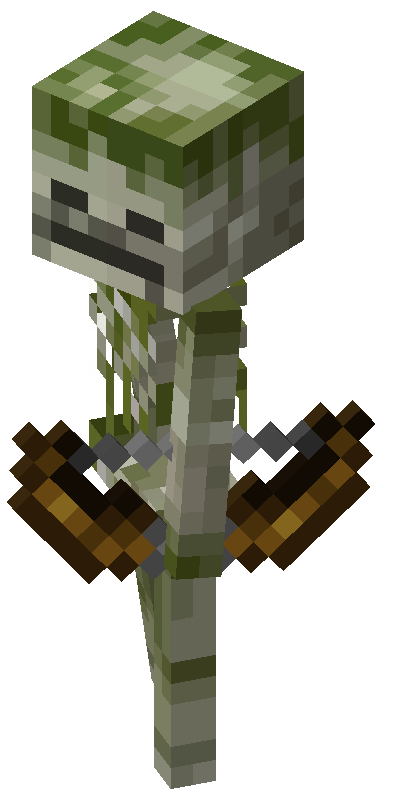

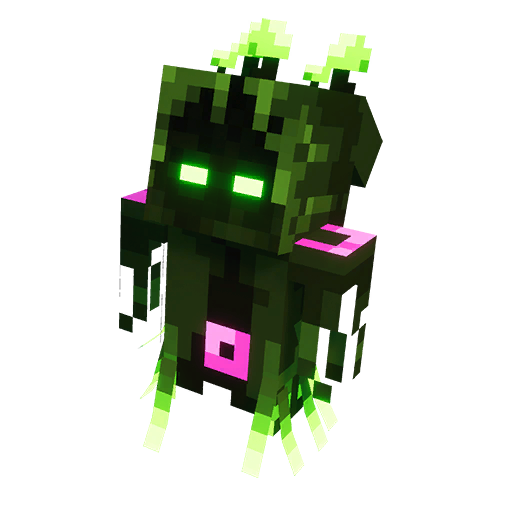

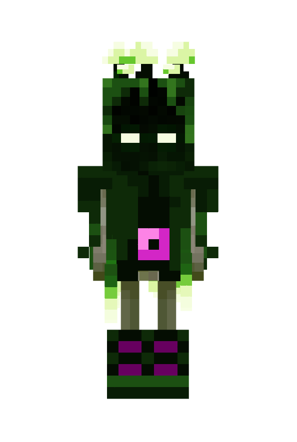

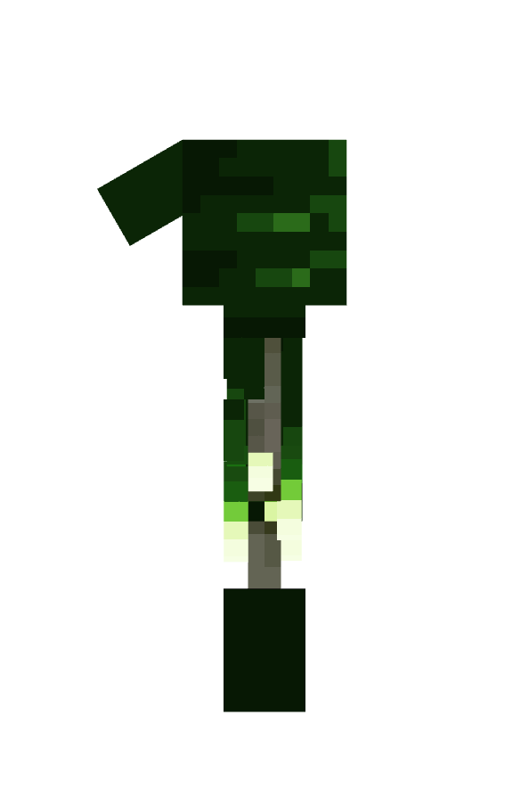

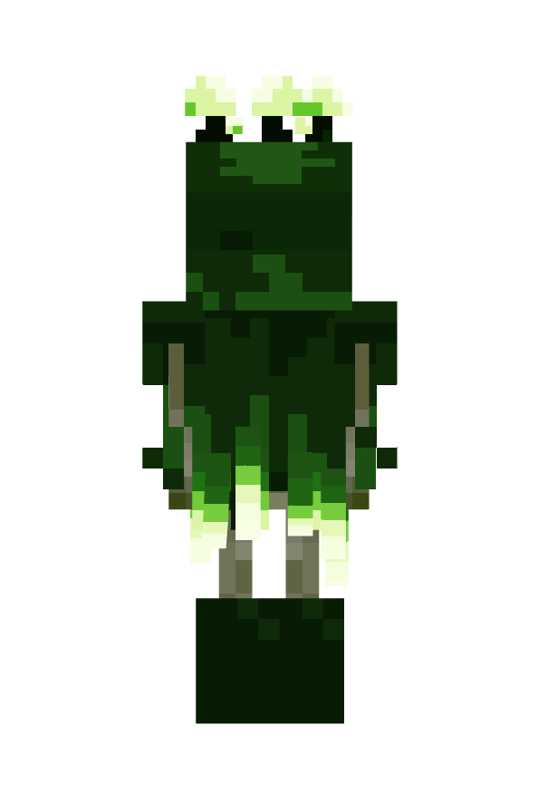

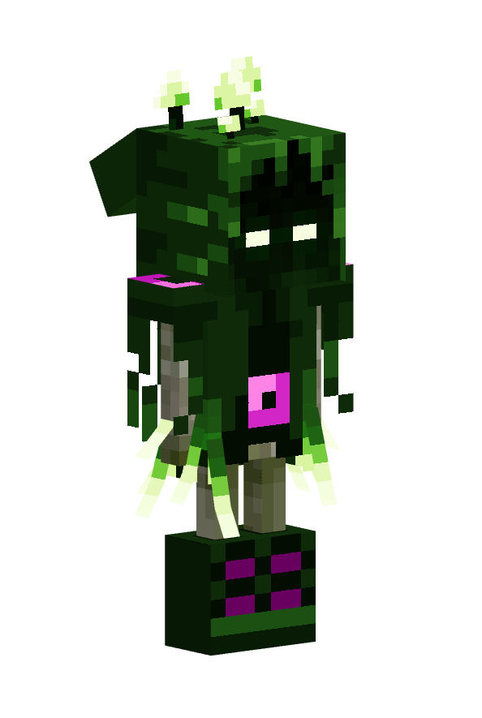
苔藓骷髅 · 原始身体
原始 SK_Skeleton 网格与骨架直接导入，配套原始 T_MossySkeleton 贴图。以下为身体独立基础色预览。

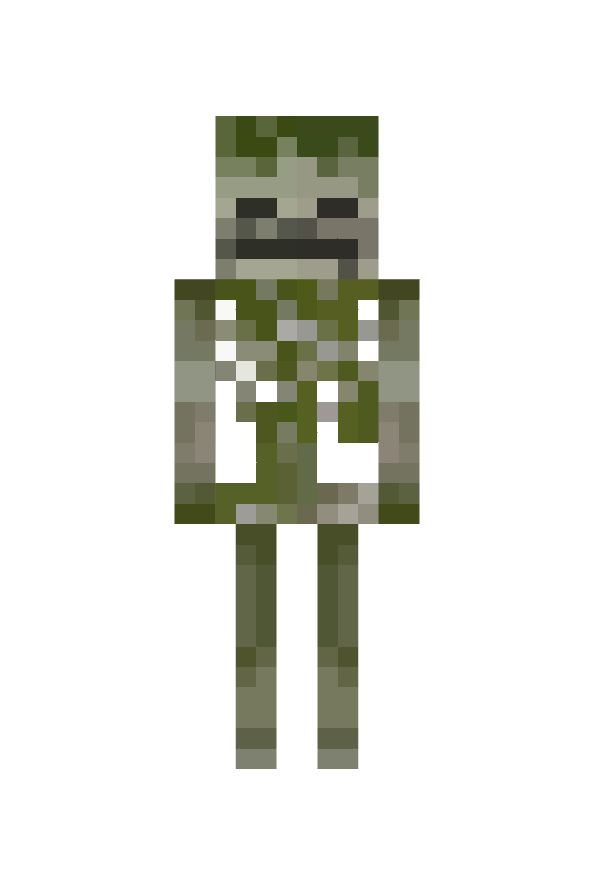

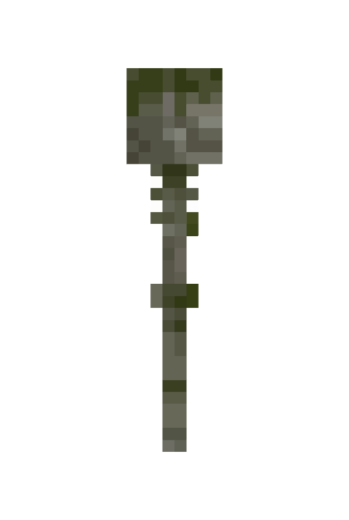

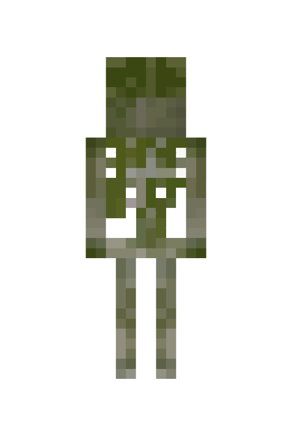

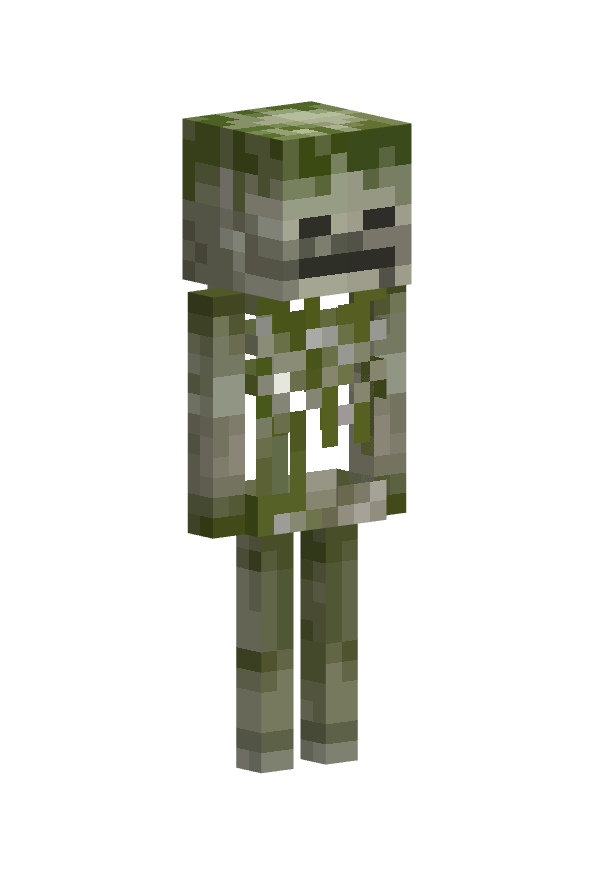
腐根盔甲 · 原始静态发光
原始盔甲独立展示；albedo 与辅助贴图分开保存，发光使用原始参数计算，没有烘焙进基础色贴图。

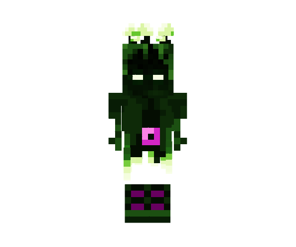

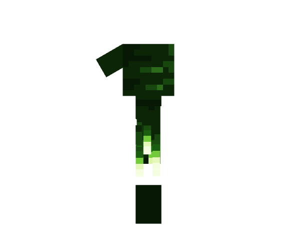

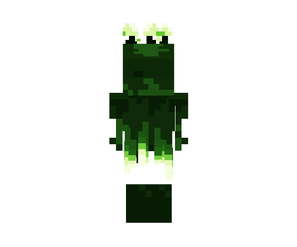

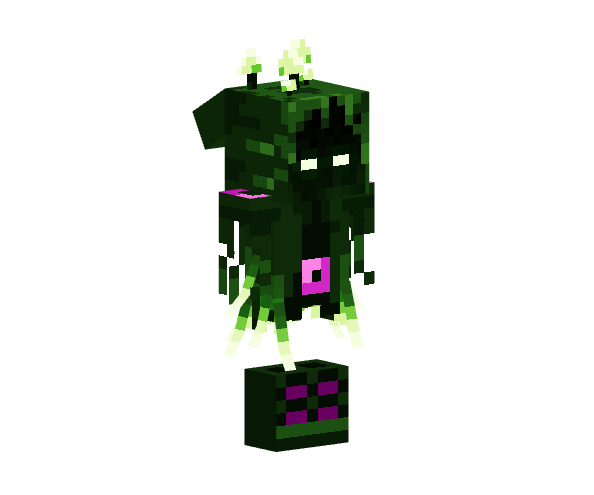
原始基础色预览 · 发光移植前的对照图
同一原始盔甲的旧基础色截图，仅供比较发光启用前后的显示变化；不属于旧版推测模型。

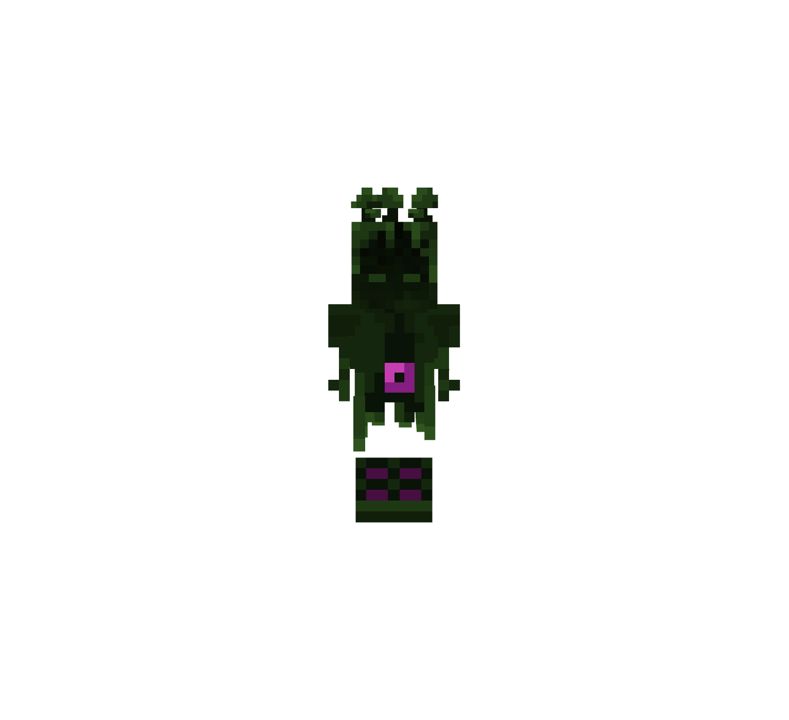

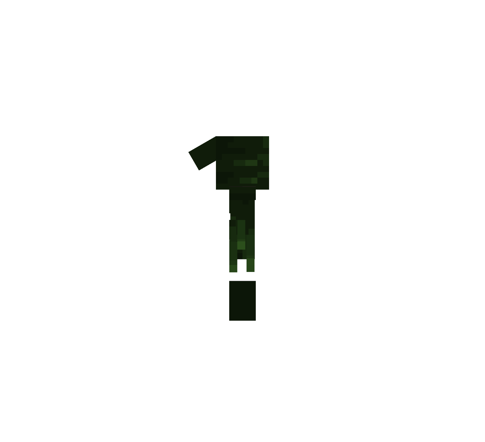

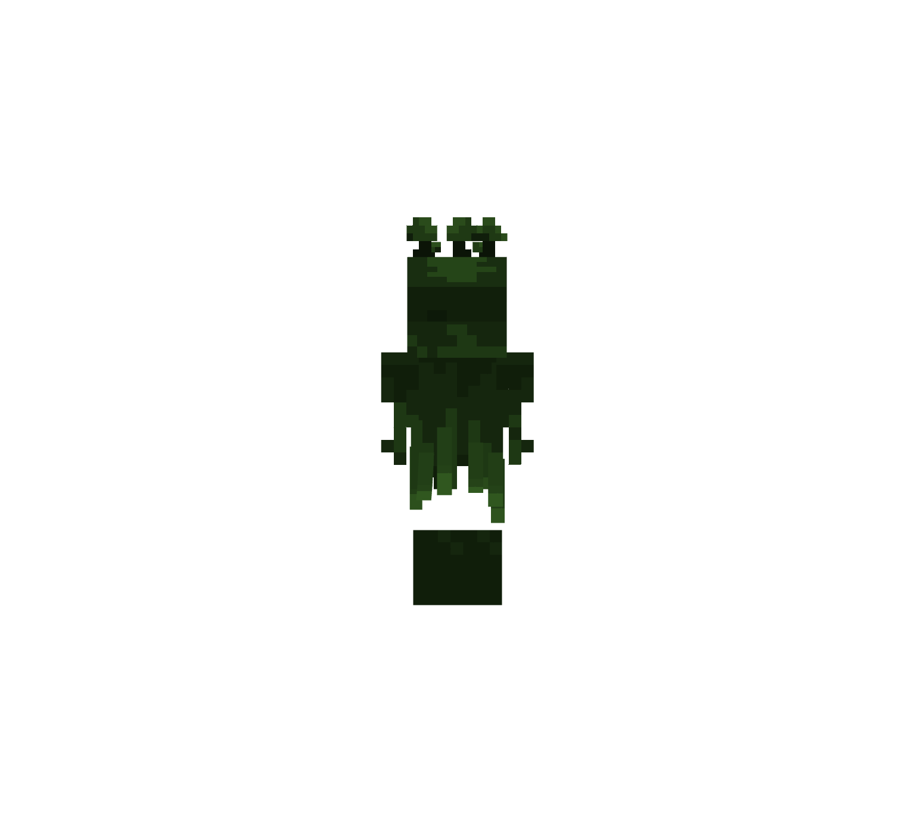

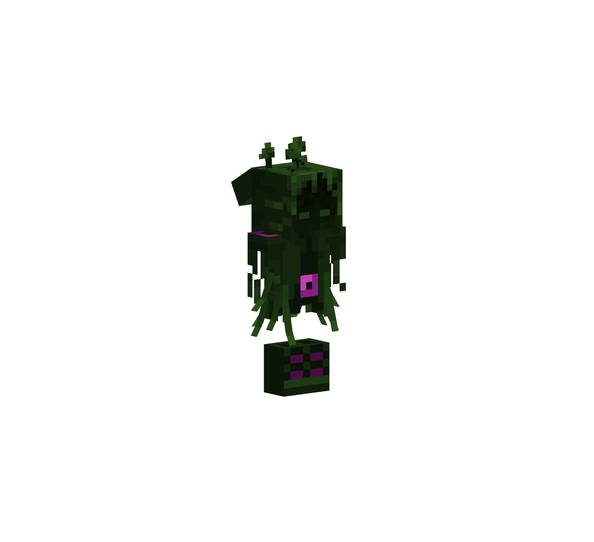
当前工程与验证记录
工程文件可下载后在 Blockbench 打开。静态发光预览需要加载下列材质插件；验证报告分别注明精度、数值容差和未验证范围。